Alle Ideen fürs Gaming-Zimmer
91 Ideen für Setups, LED-Beleuchtung, Deko und Ordnung am Schreibtisch.
LED Beleuchtung Gaming Zimmer
 RGB richtig einsetzen: 5 Regeln
RGB richtig einsetzen: 5 Regeln
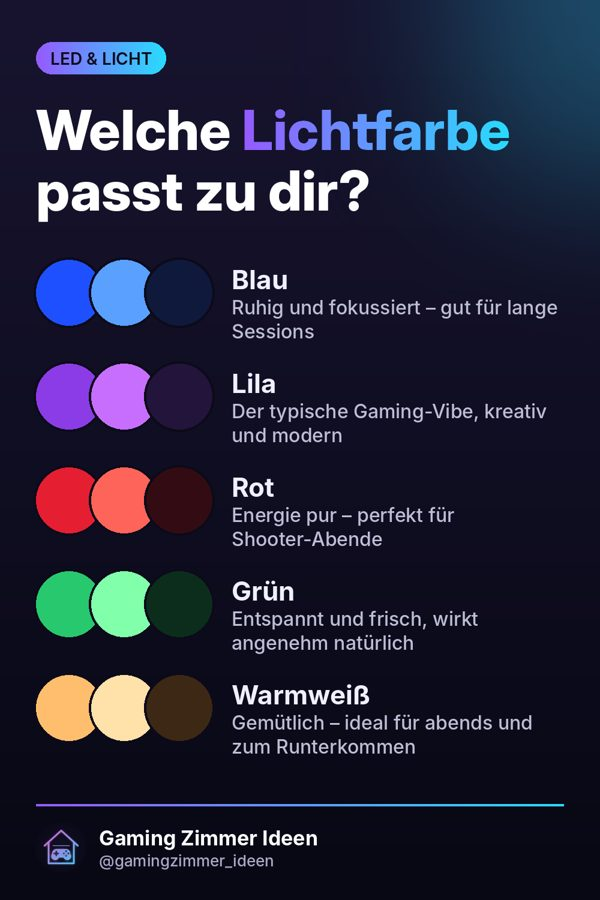
Welche Lichtfarbe passt zu dir? LED-Streifen anbringen: 6 Tipps
LED-Streifen anbringen: 6 Tipps
 Licht hinter dem Monitor: 5 Tipps
Licht hinter dem Monitor: 5 Tipps
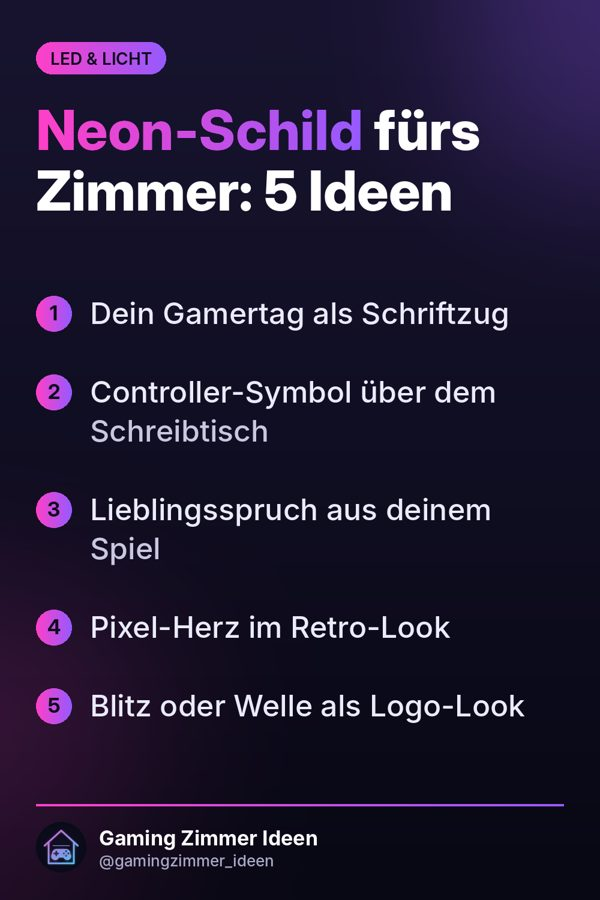
Neon-Schild fürs Zimmer: 5 Ideen Smarte Beleuchtung: 6 coole Funktionen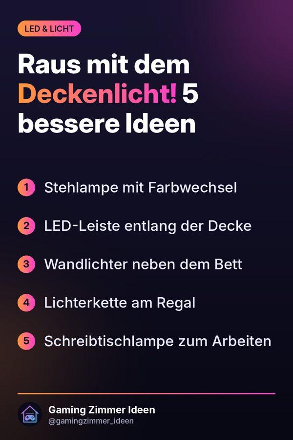
Raus mit dem Deckenlicht! 5 bessere Ideen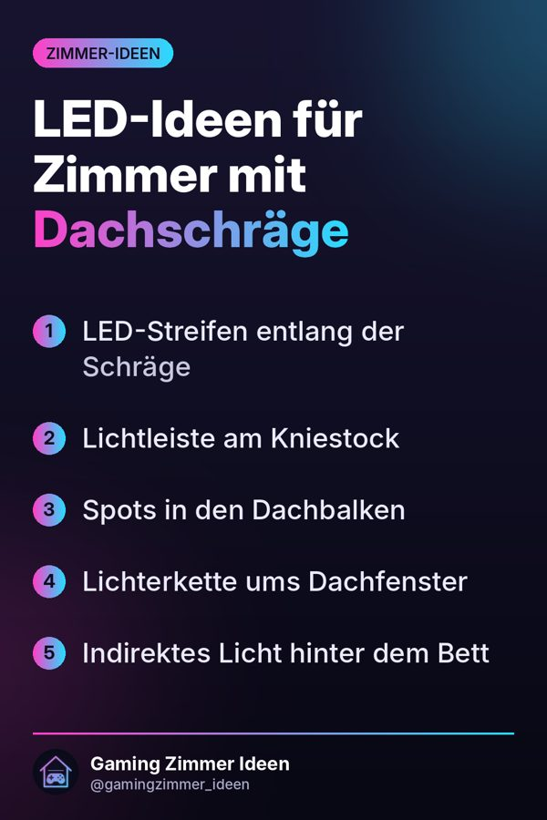
LED-Ideen für Zimmer mit Dachschräge Licht in Zonen: Zocken, Lernen, Schlafen
Licht in Zonen: Zocken, Lernen, Schlafen
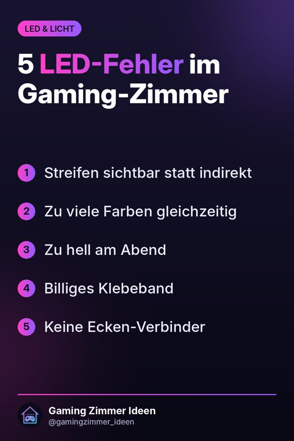
5 LED-Fehler im Gaming-Zimmer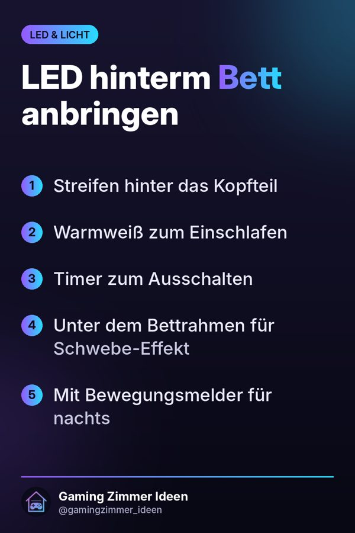
LED hinterm Bett anbringen Regale mit LED in Szene setzen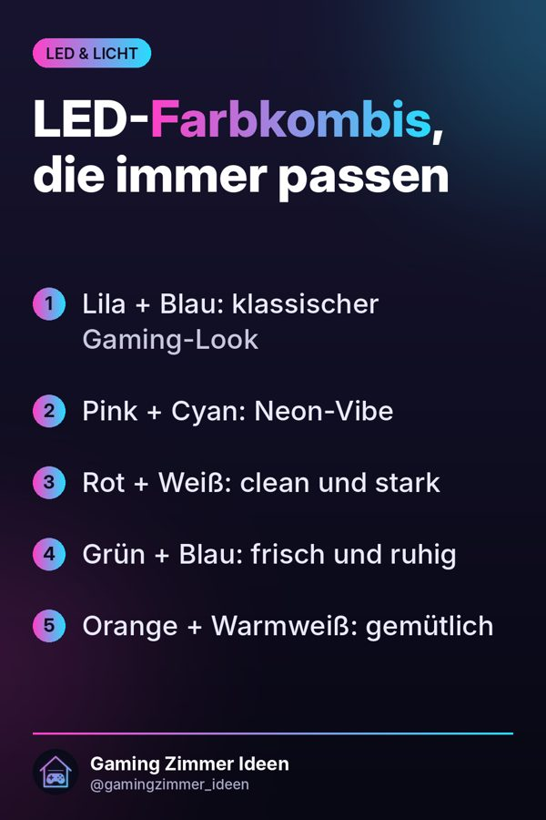
LED-Farbkombis, die immer passen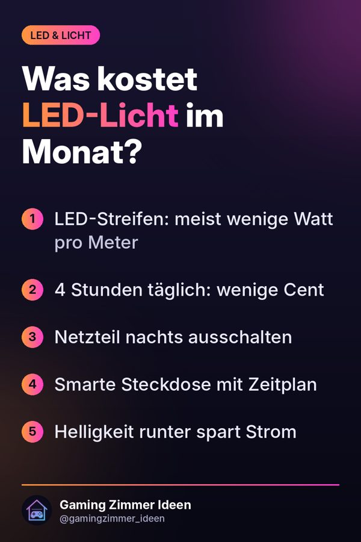
Was kostet LED-Licht im Monat? Gaming-Licht ohne LED-Streifen
Gaming-Licht ohne LED-Streifen
 LED unter dem Schreibtisch
LED unter dem Schreibtisch
 Weihnachtslicht mit deinen LEDs
Weihnachtslicht mit deinen LEDs
 4 LED-Szenen für jeden Moment
Licht ohne Aufstehen steuern
4 LED-Szenen für jeden Moment
Licht ohne Aufstehen steuern
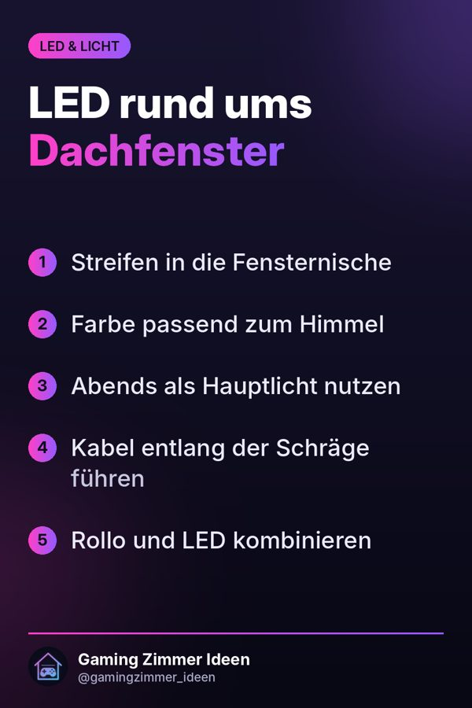
LED rund ums DachfensterGaming Setup Ideen
 Konsolen-Ecke einrichten: 6 Ideen
1, 2 oder 3 Monitore? So findest du's raus
Konsolen-Ecke einrichten: 6 Ideen
1, 2 oder 3 Monitore? So findest du's raus
 Streaming-Ecke einrichten: 6 Tipps
Streaming-Ecke einrichten: 6 Tipps
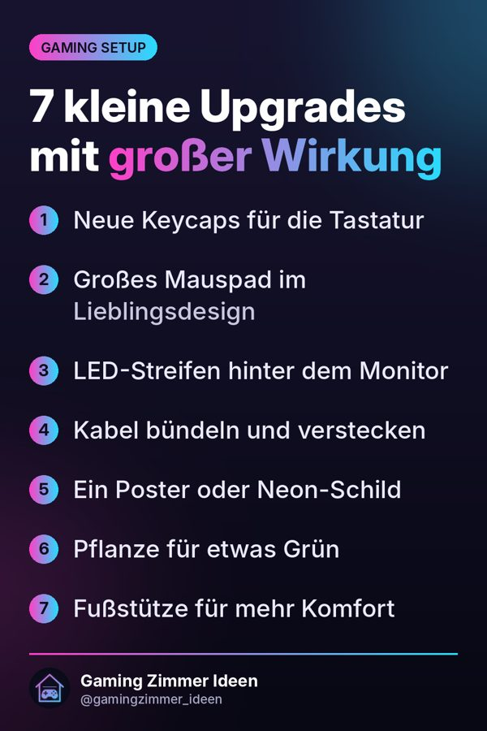
7 kleine Upgrades mit großer Wirkung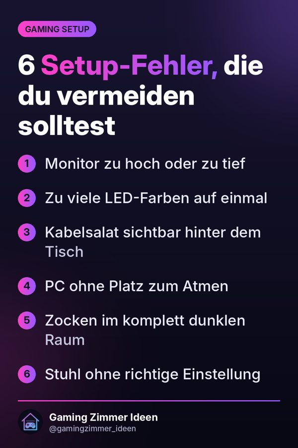
6 Setup-Fehler, die du vermeiden solltest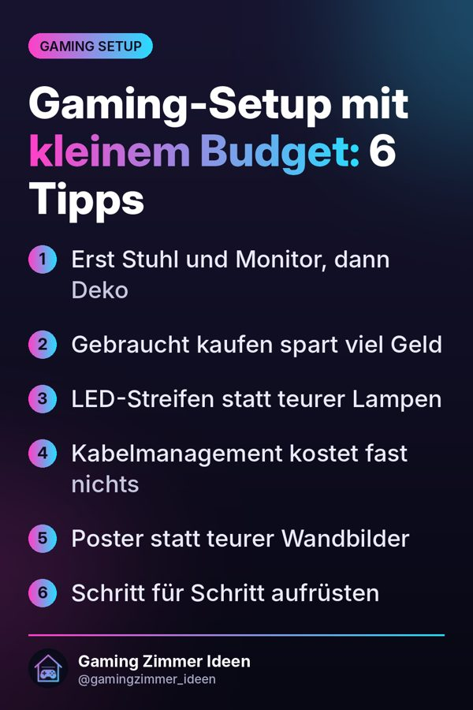
Gaming-Setup mit kleinem Budget: 6 Tipps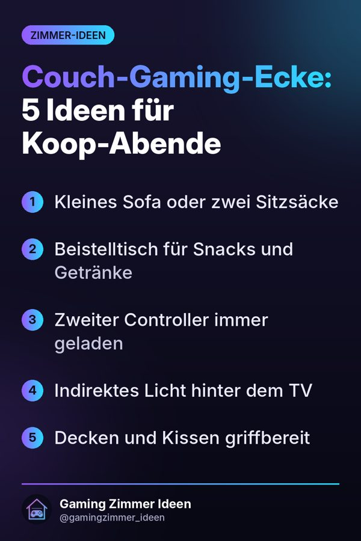
Couch-Gaming-Ecke: 5 Ideen für Koop-Abende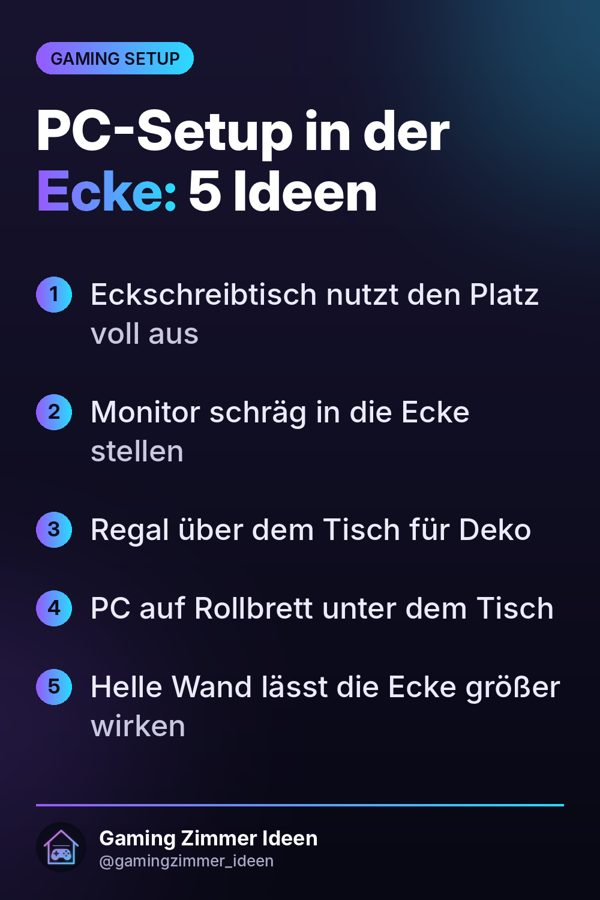
PC-Setup in der Ecke: 5 Ideen Gesund zocken: 6 Ergonomie-Tipps
Gesund zocken: 6 Ergonomie-Tipps
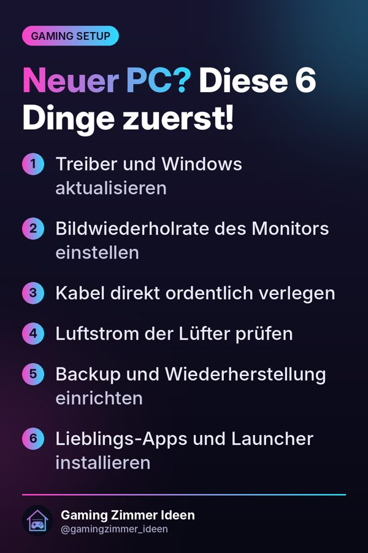
Neuer PC? Diese 6 Dinge zuerst! Minimalistisches Gaming-Setup: 6 Ideen
Minimalistisches Gaming-Setup: 6 Ideen
 Weißes Gaming-Setup: So wird's stimmig
Weißes Gaming-Setup: So wird's stimmig
 Gaming-Setup für zwei: 5 Tipps
Gaming-Setup für zwei: 5 Tipps
 Gaming-Setup unter 200 €: so geht's
Gaming-Setup unter 200 €: so geht's
 Monitor richtig einstellen: 5 Regeln
Monitor richtig einstellen: 5 Regeln
 Gaming-Stuhl oder Bürostuhl?
Wohin mit dem PC? 5 Plätze im Vergleich
Gaming-Stuhl oder Bürostuhl?
Wohin mit dem PC? 5 Plätze im Vergleich
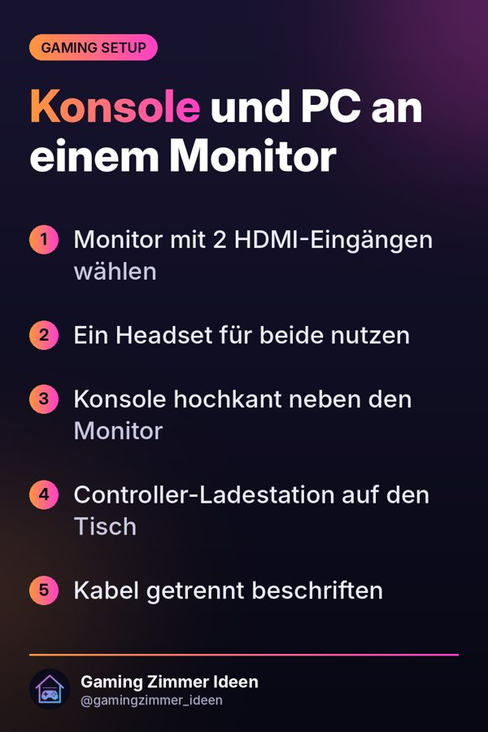
Konsole und PC an einem Monitor Setup-Check: 7 Dinge, die oft fehlen
Setup-Check: 7 Dinge, die oft fehlen
 Gaming-Setup unter der Dachschräge
Gaming-Setup unter der Dachschräge
 So wird dein Setup leiser
Gemütliches Setup für den Winter
Setup-Ziele fürs neue Jahr
So wird dein Setup leiser
Gemütliches Setup für den Winter
Setup-Ziele fürs neue Jahr
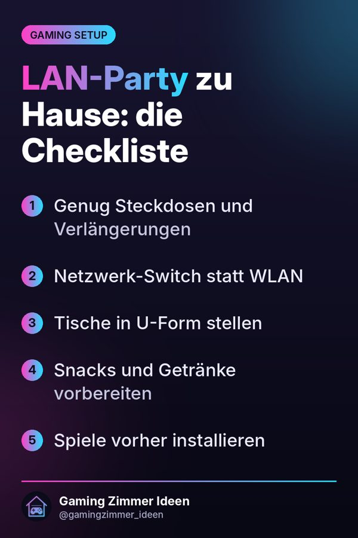
LAN-Party zu Hause: die Checkliste Was mit dem zweiten Monitor machen? Licht für deine Webcam: 5 Tipps
Licht für deine Webcam: 5 Tipps
Gaming Zimmer Deko
Wandgestaltung im Gaming-Zimmer: 6 Ideen
 Figuren & Sammlerstücke schön zeigen
Der richtige Teppich fürs Gaming-Zimmer
Figuren & Sammlerstücke schön zeigen
Der richtige Teppich fürs Gaming-Zimmer
 Schlaf- und Gaming-Zimmer in einem
Vom Jugendzimmer zum Gaming-Zimmer
Schlaf- und Gaming-Zimmer in einem
Vom Jugendzimmer zum Gaming-Zimmer
 Die besten Wandfarben fürs Gaming-Zimmer
Die besten Wandfarben fürs Gaming-Zimmer
 Geschenkideen für Gamer unter 30 €
Geschenkideen für Gamer unter 30 €
 Zimmer verdunkeln fürs Zocken
Zimmer verdunkeln fürs Zocken
 Bett und Setup in einem Zimmer
Kleines Gaming-Zimmer? 5 Platz-Tricks
Bett und Setup in einem Zimmer
Kleines Gaming-Zimmer? 5 Platz-Tricks
 Deko-Ideen für die Zimmertür
Deko-Ideen für die Zimmertür
 Pflanzen, die wenig Licht brauchen
Pflanzen, die wenig Licht brauchen
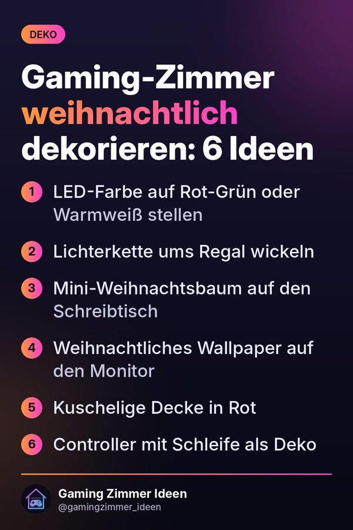
Gaming-Zimmer weihnachtlich dekorieren: 6 Ideen Hallt dein Zimmer? 5 Tipps für besseren Klang 5 pflegeleichte Pflanzen fürs Gaming-Zimmer Gemütliche Winterabende im Zockerzimmer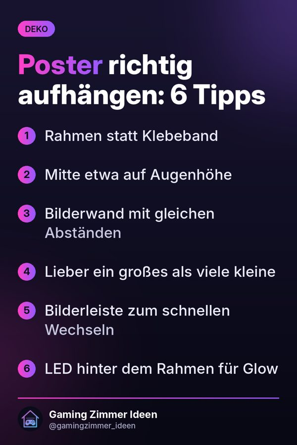
Poster richtig aufhängen: 6 TippsFiguren & Sammlerstücke schön zeigen
Der richtige Teppich fürs Gaming-Zimmer
Schlaf- und Gaming-Zimmer in einem
Vom Jugendzimmer zum Gaming-Zimmer
Die besten Wandfarben fürs Gaming-Zimmer
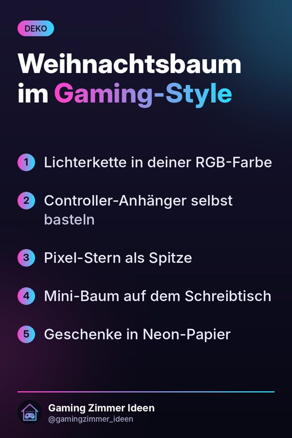
Weihnachtsbaum im Gaming-StyleGeschenkideen für Gamer unter 30 €
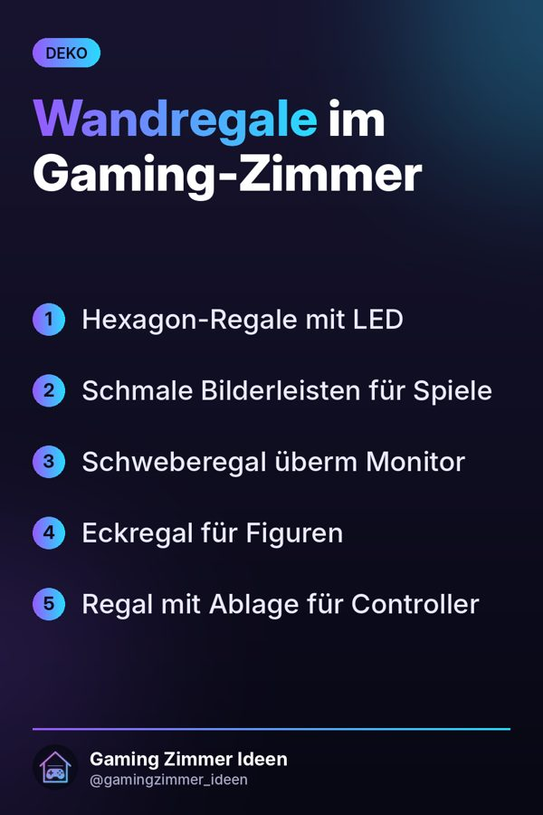
Wandregale im Gaming-Zimmer Bilderwand für Gamer: so klappt'sZimmer verdunkeln fürs Zocken
Bett und Setup in einem Zimmer
Kleines Gaming-Zimmer? 5 Platz-Tricks
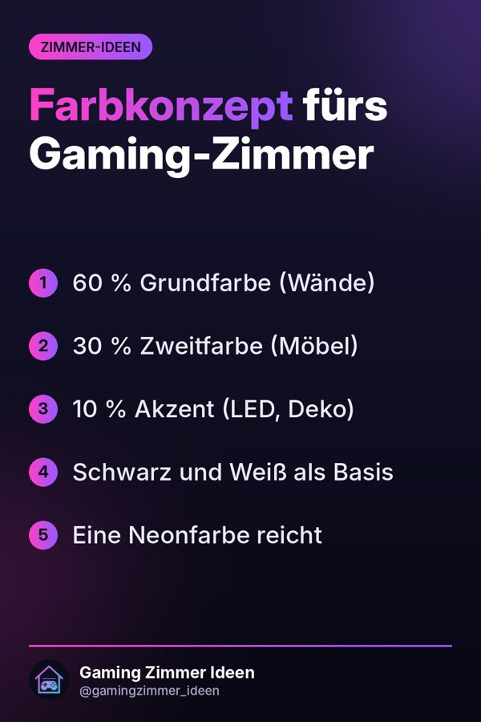
Farbkonzept fürs Gaming-Zimmer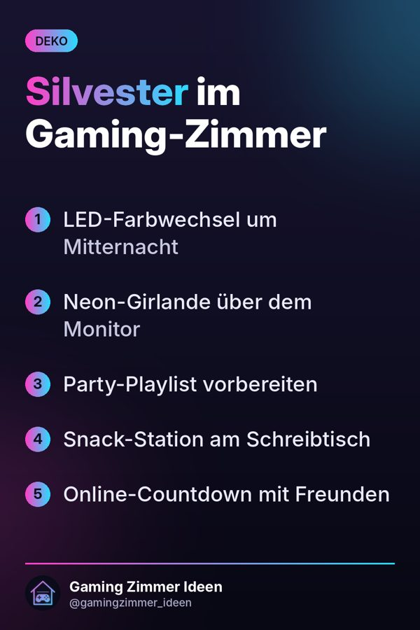
Silvester im Gaming-Zimmer Gaming-Ecke im Wohnzimmer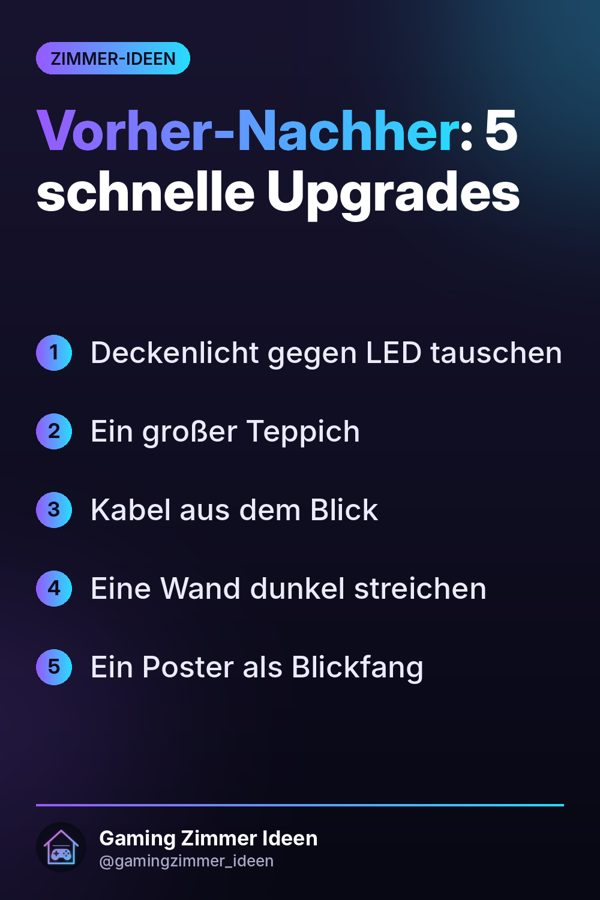
Vorher-Nachher: 5 schnelle UpgradesDeko-Ideen für die Zimmertür
Pflanzen, die wenig Licht brauchen
Schreibtisch Organisation
 7 Schreibtisch-Upgrades, die sich lohnen
7 Schreibtisch-Upgrades, die sich lohnen
 Ordnung für Controller, Spiele & Kabel
Ordnung für Controller, Spiele & Kabel
 Den richtigen Gaming-Schreibtisch finden
Kabel unsichtbar machen: 6 Wege
Den richtigen Gaming-Schreibtisch finden
Kabel unsichtbar machen: 6 Wege
 Ein Schreibtisch zum Lernen und Zocken
Ein Schreibtisch zum Lernen und Zocken
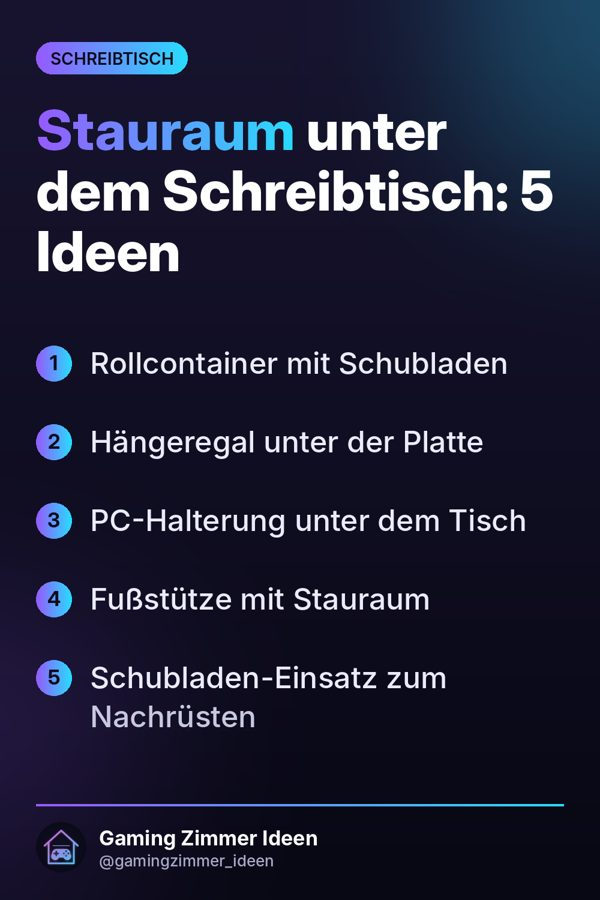
Stauraum unter dem Schreibtisch: 5 Ideen Aufräumen in 5 Minuten: die Abend-Routine Tastatur & Maus sauber halten: 5 Tipps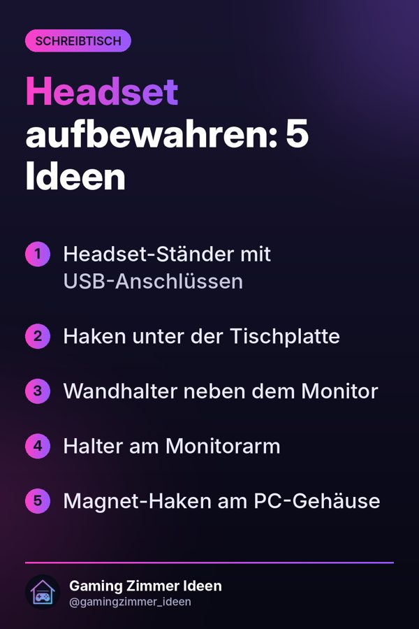
Headset aufbewahren: 5 Ideen Schreibtisch in 5 Minuten ordnen
Schreibtisch in 5 Minuten ordnen
 Die besten Helfer gegen Kabelsalat
Die besten Helfer gegen Kabelsalat
 Schreibtischunterlage: 5 Gründe
Schreibtischunterlage: 5 Gründe
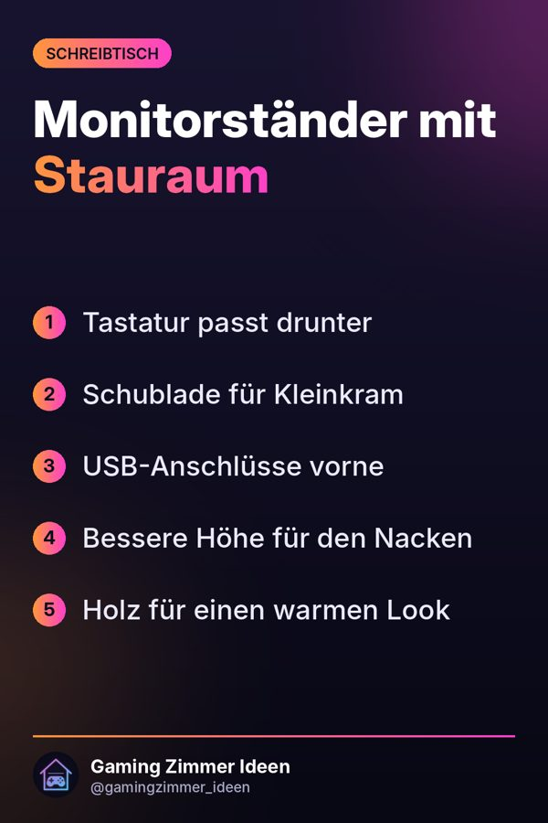
Monitorständer mit Stauraum Schubladen-Ordnung für Gamer
Schubladen-Ordnung für Gamer
 Tastatur reinigen in 5 Schritten
Tastatur reinigen in 5 Schritten
 Deko für den Schreibtisch: 5 Ideen
Deko für den Schreibtisch: 5 Ideen
 Digitale Ordnung am PC
Digitale Ordnung am PC
 Die richtige Schreibtischhöhe
Die richtige Schreibtischhöhe
 Eine Ladestation für alles
Eine Ladestation für alles
 Spiele-Sammlung ordentlich lagern
Spiele-Sammlung ordentlich lagern
 Putzplan fürs Gaming-Setup
Putzplan fürs Gaming-Setup